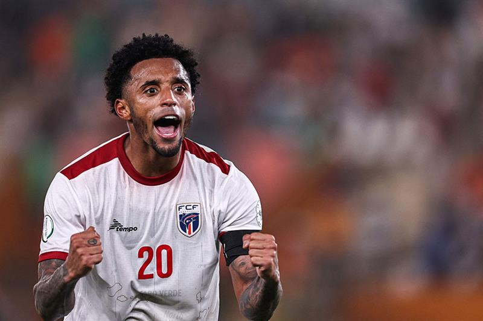

Cabo Verde es una selección emergente del fútbol africano que todavía no ha logrado clasificar a la FIFA World Cup. Sin embargo, en los últimos años ha mostrado un crecimiento importante y se ha vuelto más competitiva a nivel internacional.
La selección caboverdiana ha destacado en torneos africanos gracias a su organización, velocidad y talento de jugadores que compiten en ligas europeas. Futbolistas como Ryan Mendes han sido referentes del equipo nacional.
Aunque aún busca su primera participación mundialista, Cabo Verde continúa desarrollando su fútbol y es considerada una de las selecciones con mayor progreso en África.

Ryan Mendes es el capitán y máximo referente histórico de la selección de Cabo Verde. Nació el 8 de enero de 1990 y juega como extremo o delantero, destacando por su velocidad, experiencia y capacidad goleadora. A lo largo de su carrera pasó por clubes como LOSC Lille y actualmente juega en el Iğdır FK. Con la selección caboverdiana se convirtió en el jugador con más partidos y más goles en la historia del país, además de liderar al equipo en su histórica clasificación al Mundial 2026.
